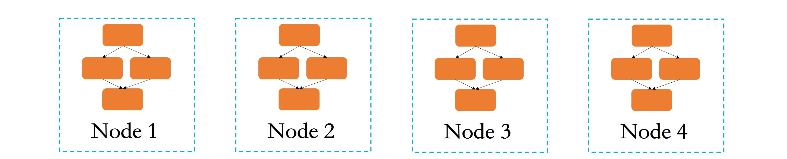
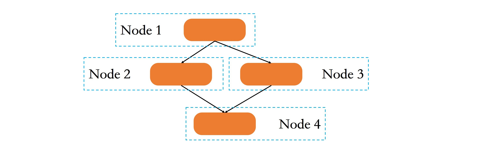
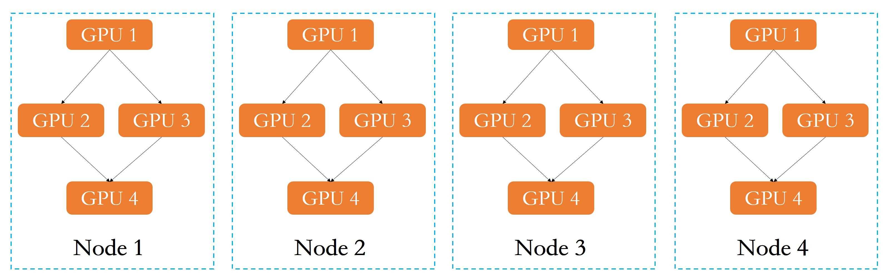
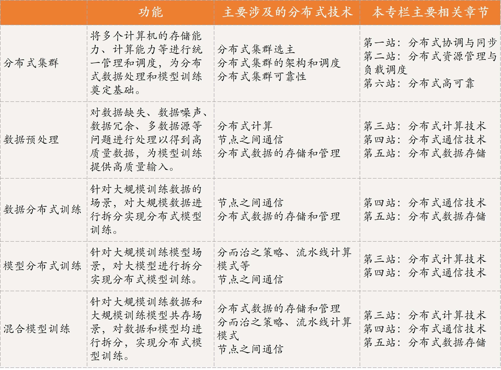

- 00 开篇词 四纵四横，带你透彻理解分布式技术.md.html
- 01 分布式缘何而起：从单兵，到游击队，到集团军.md.html
- 02 分布式系统的指标：啥是分布式的三围.md.html
- 03 分布式互斥：有你没我，有我没你.md.html
- 04 分布式选举：国不可一日无君.md.html
- 05 分布式共识：存异求同.md.html
- 06 分布式事务：All or nothing.md.html
- 07 分布式锁：关键重地，非请勿入.md.html
- 08 分布式技术是如何引爆人工智能的？.md.html
- 09 分布式体系结构之集中式结构：一人在上，万人在下.md.html
- 10 分布式体系结构之非集中式结构：众生平等.md.html
- 11 分布式调度架构之单体调度：物质文明、精神文明一手抓.md.html
- 12 分布式调度架构之两层调度：物质文明、精神文明两手抓.md.html
- 13 分布式调度架构之共享状态调度：物质文明、精神文明多手协商抓.md.html
- 14 答疑篇：分布式事务与分布式锁相关问题.md.html
- 15 分布式计算模式之MR：一门同流合污的艺术.md.html
- 16 分布式计算模式之Stream：一门背锅的艺术.md.html
- 17 分布式计算模式之Actor：一门甩锅的艺术.md.html
- 18 分布式计算模式之流水线：你方唱罢我登场.md.html
- 19 分布式通信之远程调用：我是你的千里眼.md.html
- 20 分布式通信之发布订阅：送货上门.md.html
- 21 分布式通信之消息队列：货物自取.md.html
- 22 答疑篇：分布式体系架构与分布式计算相关问题.md.html
- 23 CAP理论：这顶帽子我不想要.md.html
- 24 分布式数据存储系统之三要素：顾客、导购与货架.md.html
- 25 数据分布方式之哈希与一致性哈希：“掐指一算”与“掐指两算”的事.md.html
- 26 分布式数据复制技术：分身有术.md.html
- 27 分布式数据之缓存技术：“身手钥钱”随身带.md.html
- 28 分布式高可靠之负载均衡：不患寡，而患不均.md.html
- 29 分布式高可靠之流量控制：大禹治水，在疏不在堵.md.html
- 30 分布式高可用之故障隔离：当断不断，反受其乱.md.html
- 31 分布式高可用之故障恢复：知错能改，善莫大焉.md.html
- 32 答疑篇：如何判断并解决网络分区问题？.md.html
- 33 知识串联：以购买火车票的流程串联分布式核心技术.md.html
- 34 搭建一个分布式实验环境：纸上得来终觉浅，绝知此事要躬行.md.html
- 特别放送 Jackey：寄语天涯客，轻寒底用愁.md.html
- 特别放送 分布式下的一致性杂谈.md.html
- 特别放送 崔新：追根溯源，拨开云雾见青天.md.html
- 特别放送 徐志强：学习这件事儿，不到长城非好汉.md.html
- 特别放送 那些你不能错过的分布式系统论文.md.html
- 结束语 为什么说提升职业竞争力要从尊重、诚实开始？.md.html
- 捐赠
08 分布式技术是如何引爆人工智能的？
你好，我是聂鹏程。今天，我来继续带你打卡分布式核心技术。
通过前面课程，相信你已经对分布式的起源以及什么是分布式有了一定的了解，从用户留言来看很多同学对分布式技术、分布式技术的应用，以及分布式技术的重要性非常感兴趣。所以，我将以人工智能技术为例，带你了解分布式技术的应用及其重要性。
什么是人工智能？
2016年3月，Google AlphaGo以4:1的比分赢得了世界围棋冠军李世石。这场围棋人机大战，将人工智能技术推向了高潮。现在，人工智能已经广泛渗透到了我们的生活中，比如手机拍照美化、人脸识别、平安城市、自然语言处理、语音识别等。
那么，到底什么是人工智能呢？
所谓人工智能，其实就是希望机器能够模拟人的思维，像人一样智能。目前，对人工智能的定义大多可划分为四类，即机器“像人一样思考”“像人一样行动”“理性地思考”和“理性地行动”。这里的行动，指的是采取行动或制定行动的决策。
那人工智能是如何让机器像人那样智能呢？人并不是天生就会解决问题的，我们经常会听到一句经典的话“见多识广”，人遇到新的问题，是通过学习新知识，然后结合自己的经验去解决的。比如，人并不是生来就认识香蕉，而是通过后天的学习（包括学习香蕉的形状、颜色、口味等）来获取识别香蕉的经验，当下次再看到香蕉时，就知道这是香蕉了。
人工智能要模拟人的智能也类似，需要通过大量的数据进行学习和分析获得规律（即建立一个模型），然后利用该规律或模型对未知数据进行预测，以判断是否与建模数据具有相同特征。
从人工智能的定义可以看出，数据、模型（也叫作算法）、算力是人工智能的三大核心。在一定程度上可以说，数据决定了机器学习能达到的上限，模型提供了方法。因此数据处理和模型训练是人工智能的关键技术，算力决定了数据处理和模型训练的实用性能，而分布式技术就是解决算力的不二妙招。
接下来，我就对数据处理和模型训练进行具体分析，来帮助你了解人工智能中需要用到哪些分布式技术来解决算力问题。
数据处理
数据处理又称数据预处理，是指通过数据统计、数据集成、数据清理、数据规约、数据变换等方法，对数据缺失、数据噪声、数据冗余、多数据源等问题进行处理以得到高质量数据，为模型训练提供高质量输入，是人工智能不可缺少的环节。
其实，数据处理类似于我们的知识整理过程。一个精心打造的、体系化梳理过的专栏文章，可以帮助我们在学习一门课程时，少走弯路、避免踩雷、达到事半功倍的效果。同样地，一个精心处理过的数据集，对于人工智能的模型训练也能起到事半功倍的效果，一方面可以缩短机器学习的周期，另一方面也可以提高机器学习的质量。
所以接下来，我们就一起看看数据预处理的方法吧。
数据统计（Data Statistics）。数据统计是数据预处理的第一步，其范围、规模、方式等会直接影响数据分析的结果。常见的统计特征有最大值、最小值、均值、中位数、方差、标准差等。
数据集成（Data Integration）。数据的收集有多种途径，比如文件数据、数据库数据、问卷数据等，而不同的数据源，其数据的存储方式、命名规则、单位等不尽相同，所以我们需要数据集成来将多个数据源的数据整合到一起，以保证数据结构、属性的一致性，并去除冗余数据，方便后续分析。
数据清理（Data Cleaning）。由于用户忘记或设备损坏，经常会造成部分数据缺失；由于仪器故障或用户填写错误，经常会出现数据错误（噪声数据）等。如果不对这些数据做任何处理，后面的模型训练过程将产生严重偏差。数据清理过程就是用来解决这个问题的，它可以通过平均值或众数等来填充丢失值或修改这些噪声值。
数据规约（Data Reduction）。由于机器学习中的数据量很大，因此会导致很多重复的特征，或者很多不重要的特征（比如ID号等）。数据规约通常指通过主成分分析法 (Principal Component Analysis，PCA)、小波变换(Wavelet Transform，WT)等方法去除重复特征及不重要的特征，从而减少数据的维度或者数据量，降低问题复杂度，同时不影响后面训练的结果。
数据变换（Data Conversion）。数据变化是指通过标准化、离散化和分层化等方法对数据进行集成、清理、规约等操作，使得数据更加一致、更加容易被模型处理。数据变换方法主要有数据标准化、数据离散化和数据泛化三类。
可以看出，数据预处理虽然很复杂，但可以拆分成多个步骤进行。对于小样本数据处理时，单台机器的处理能力就足够了，所以采用单台机器进行处理即可。但是对于大规模数据来说，单台机器的处理能力已成为瓶颈，此时，不得不需要分布式数据处理了。
目前，业界已经有很多大数据处理软件，比如分布式计算框架MapReduce、Spark，分布式存储框架HDFS、HBase等，来进行分布式数据处理。
备注：我会在专栏的“第三站：分布式计算技术”和“第五站：分布式数据存储”与你详细讲述这些框架。
接下来，我们再一起看看分布式如何助力模型训练。
分布式模型训练
在了解什么是分布式模型训练之前，我们先看一下什么是模型训练。
什么是分布式模型训练？
模型训练就是从已知数据中找到规律。具体来说就是，不断通过已有数据进行学习寻找规律，并进行验证增强，最终给出最适合的模型参数，并根据该模型参数对给定的未知数据进行预测。
比如有一堆橘子和西瓜，可以通过模型训练得到：大的、绿色的判定为西瓜，小的、黄色的判定为橘子。那么当给出一个未知数据时，我们通过它的大小及颜色信息就可以判断该水果是橘子还是西瓜。这就是模型训练。
其中，大小和颜色属于预测的两个特征，而它们的具体数值（比如，大于10厘米等，颜色RGB的数值范围）就是模型参数。
随着大数据时代的到来，人工智能技术逐渐向大规模训练数据、大模型训练等方向发展。比如，百度的Deep Speech 2系统使用了11940小时的语音数据以及超过200万句表述来训练英语的语音识别模型；2011年谷歌训练出拥有十亿个参数的超大神经网络模型。很明显，单台计算机的存储能力、计算能力已经不能满足了，因此分布式模型训练诞生了。
研究表明，在具有 GPU加速卡的单机上，采用ImageNet 数据集，完成一次训练大概需要多达一周的时间。这还仅仅只是一次训练迭代的时间，如果是比较严格的生产级业务，至少需要数十次迭代，训练累计时间将会达到数十周。试想一下，如果一个业务仅仅是模型训练就花费数十周，那么等到真正上线，恐怕最佳时间窗口也已经过去了。
在多台机器上的分布式训练无疑能极大减少训练时间，近期研究中，基于ImageNet数据集，采用包含2048个GPU 的集群将训练时间降低到了4分钟。TensorFlow是由Google开源且在业内非常流行的机器学习计算框架，它的分布式版本利用了 GPU 加速服务器的虚拟化集群，将深度学习的训练时间从数周缩短到数小时。
总结来讲，分布式训练可以大大提升训练效率，大幅缩短训练时间，从而缩短业务面市周期，所以各大公司都在研究分布式训练，比如华为、IBM、阿里巴巴等。
那，什么是分布式模型训练呢？
分布式模型训练是利用分布式集群，将多个计算机的存储能力、计算能力等进行统一管理和调度，从而实现模型训练。
可以看到，分布式模型训练的前提是有一个分布式集群，因此一个高效、可靠的分布式集群是基础。而这个分布式集群的架构、选主、调度、可靠性等关键技术，奠定了分布式模型训练的基础。
备注：关于分布式集群的架构和调度，我会在本专栏的“第二站：分布式资源管理与负载调度”进行详细讲解；关于集群的选主，我已经在本专栏的“第一站：分布式协调与同步”中进行了讲解；而关于可靠性，我会在在本专栏的“第六站：分布式高可靠”进行讲解。
好了，有了分布式集群作为基础，接下来，我们要考虑的就是如何进行分布式模型训练了。不同的场景，采用的分布式模型训练的方法也不一样，主要包括数据分布式训练、模型分布式训练和混合模型训练三类。
接下来，我将带你了解这三种分布式模型训练模式，并带你了解其中涉及的分布式技术。
数据分布式训练
数据分布式训练主要是针对大规模训练数据的场景。如下图所示，数据分布式训练是在每个节点（假设，一台服务器代表一个节点）上都存储或运行一个完整的模型训练程序的基础上，将大规模数据进行划分，然后将划分后的数据子集分配到多个节点上，每个节点根据自己接收到的数据进行训练。

每个节点会根据自己拥有的数据子集训练出一个子模型，并按照一定的规则与其他节点通信，比如各节点向其他节点传递本节点的子模型参数或参数更新等信息，以有效整合来自各个节点的训练结果，来得到全局的机器学习模型。比如，每个节点训练一个子模型得到自己的参数，最终的模型为多个节点的参数取平均值。
可以看出，数据分布式有如下两个重要信息：
- 数据需拆分存储到不同的节点进行训练，因此涉及了数据的拆分方法、数据的分布式存储和管理，其中数据拆分方法主要有两类，对训练样本进行划分和对每个样本的维度进行划分，这是非常基础的方法。目前，市面上大部分的书籍均有介绍，如果你感兴趣的话可以自行学习。
- 节点之间需要通信交互信息。分布式通信是实现任何分布式技术的底座，没有分布式通信技术，分布式模型训练犹如纸上谈兵。
备注：数据的分布式存储和管理，是数据分布式的基础，我会在“第五站：分布式数据存储”中与你详细讲述；而关于分布式通信的相关技术，我会在“第四站：分布式通信技术”与你介绍。
模型分布式训练
了解了数据分布式训练，我们再来看一下模型分布式训练。它针对的主要是大模型训练场景，在分布式领域中也被称为任务并行或任务分布式。
如下图所示，模型分布式训练是指将大模型进行拆分，然后将拆分后的子模型分配到不同的节点上进行训练。与数据分布式训练不同的是，首先每个节点上只存储和运行部分模型训练程序，而不是完整的模型训练程序；其次，各个子模型之间存在较强的依赖关系，比如节点1的输出是节点2和节点3子模型的输入，因此节点之间需要进行中间计算结果的通信。

可以看出，模型分布式训练包含如下两个关键信息：
- 大模型拆分为多个小模型，其本质是将大任务拆分为多个子任务，这其实就是分而治之策略。而子任务之间的拆分，需要运用包括流水线、MapReduce等在内的多种分布式计算模式。
- 不同节点上的子任务之间，需要通过通信交互中间计算结果，涉及分布式通信技术。
备注：任务拆分和流水线等分布式计算模式是模型分布式训练不可缺少的技术，我会在“第三站：分布式计算技术”与你详细介绍；而关于分布式通信的相关技术，你可以移步“第四站：分布式通信技术”中进行了解。
混合模型训练
混合模型训练，主要是针对大规模训练数据和大模型训练共存的场景。
所谓混合模型训练，就是将数据分布式训练和模型分布式训练结合起来。如下图所示，假设有一个多GPU集群系统，首先对模型进行拆分，将子模型分配到单节点上不同的GPU，然后对数据进行划分，每个节点负责训练一部分数据，最后进行模型参数同步，得到全局参数和全局模型。

从混合模型训练的流程可以看出：
- 单节点或多节点实现模型并行或模型分布式训练，涉及模型拆分、并行与分布式计算模式等；
- 多节点之间实现了数据分布式训练，涉及数据的拆分方法和数据的分布式存储和管理等技术；
- 单节点之间的模型分布式训练，需要单节点上多进程之间通信；多节点之间的分布式训练需要跨节点跨进程通信。
备注：我会在“第三站：分布式计算技术”“第四站：分布式通信技术”和“第五站：分布式数据存储”模块中，与你讲述这其中涉及的分布式技术。
总结
讲完分布式模型训练，这节课就告一段落了。分布式训练可以将深度学习的训练时间从数周缩短到数小时，极大提升了训练效率，这充分说明了分布式技术的重要性。接下来，我们一起总结下今天的主要内容吧。
首先，我与你介绍了什么是人工智能，让你先对其有了一个整体的理解。
然后，我与你介绍了人工智能中的数据预处理方法，包括数据清理、数据统计、数据集成、数据规约、数据变换等，在这其中分布式数据预处理是处理大规模数据的一个很好的方式。
最后，我与你介绍了分布式模型训练，包括数据分布式训练、模型分布式训练和混合模型训练3种方法，并介绍了其中涉及的关键分布式技术，比如数据的分布式存储和管理、分布式通信等。没有这些关键的分布式技术，分布式模型训练其实就是空谈了。
现在，我将人工智能中涉及的关键分布式技术整理为了一张表格，以方便你学习。

我是聂鹏程，感谢你的收听，欢迎你在评论区给我留言分享你的观点，也欢迎你把这篇文章分享给更多的朋友一起阅读。我们下期再会！
© 2019 - 2023 Liangliang Lee. Powered by gin and hexo-theme-book.